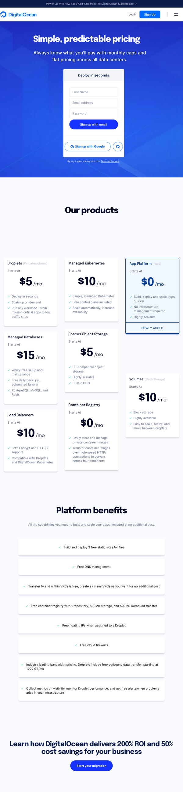
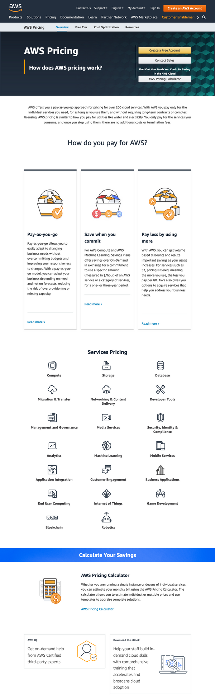
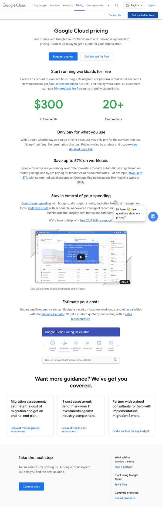
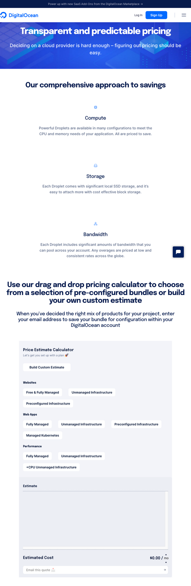
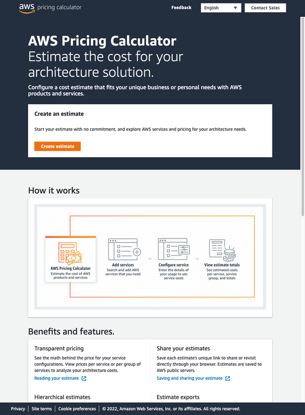
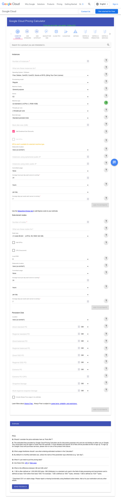

Thoughts on Digital Ocean's relative pricing transparency
I first found out about Digital Ocean around the time that I became a web developer. It might even have been the first (and only) hosting provider I’ve ever paid for personally, and I’ve been a content customer for years. I also own a modest number of shares in Digital Ocean, and have been following the company more closely since it’s IPO last year.
I received an email this week from Digital Ocean titled, “DigitalOcean prices are changing July 1st. Here’s what you need to know.” In it, the company revealed a new $4/month “Droplet” (their term for hosted virtual machines), and other rate changes. For me, if I understand correctly, this will mean a $2/month increase for the Droplet where I host a Wordpress installation that I maintain (although I could probably even downgrade to the $4/month plan with effectively no disruption to my website).
One thing that I appreciated with this news is that Digital Ocean’s pricing has remained transparant, even if they’ve added some complexity to their offering (by adding more tiers). What I mean by transparant, is that I can see, more-or-less, what their products cost by going to their website, and clicking-on the “pricing” link in their nav bar.
Take a look for yourself.
Below you can see screenshots that I’ve taken from the following URLs:
- https://www.digitalocean.com/pricing
- https://aws.amazon.com/pricing/
- https://cloud.google.com/pricing
The major difference that I see between them, is that while Digital Ocean’s page shows actual prices, AWS’s and GCP’s refer you to pricing calculators, or encourage you to get in touch with a sales representative.
Note: I’ve clipped the footers from each screenshot for space.



To me, the lack of immediate transparency with AWS and GCP is an immediate turn-off. Probably if I were a FAANG sized company, or even a Fortune-500 sized company, I would have a team of MBAs that I could task with navigating exactly what my company’s needs are, and they could negotiate affordable service with one of the AWS or GCP sales reps… But that’s not my case, so apart from the potential resume-driven-development appeal, I would probably never choose GCP or AWS over DO for any of my own projects, and if I worked for a start-up I would always reccomend Digital Ocean out of the simplicity and transparency that I associate with their offer.
I decided to click-through to the pricing calculators for each platform to see how they stacked-up there as well. Estimating the cost of compute isn’t my bag, and I’m less interested in the details of how these estimates are calculated than I am in the UX of actualy getting a price from each of these cloud providers. Digital Ocean’s “click-and-drag” calculator feels admittedly a little too basic, and I really don’t like click-and-drag UIs. GCP’s calculator seems to be the more straight-forward of the three, while AWS makes you click through to a third page to find the actual calculators that you’re looking for.



I think that Digital Ocean still has a little ways to go with regard to serving larger customers that need more tailored estimates, but I think that the simplicty of their offering is more friendly to individual developers and smaller companies/teams than what their competitors offer. What I’d like to see from them is to leverage the strength of their community of documentation writers to make their pricing even more understandable.
I recently read a post about Stripe’s Marcdoc tool for content (as code) authoring, and the comments section was full of people proclaiming how good Stripe’s documentation is. DigitalOcean is already known for their tutorials and other content (CSS Tricks, for one). I’d like to see them go even further in this direction, and I think that better documentation (as boring as that may sound) will leave developers with zero choice about which cloud platform they’d rather work with.